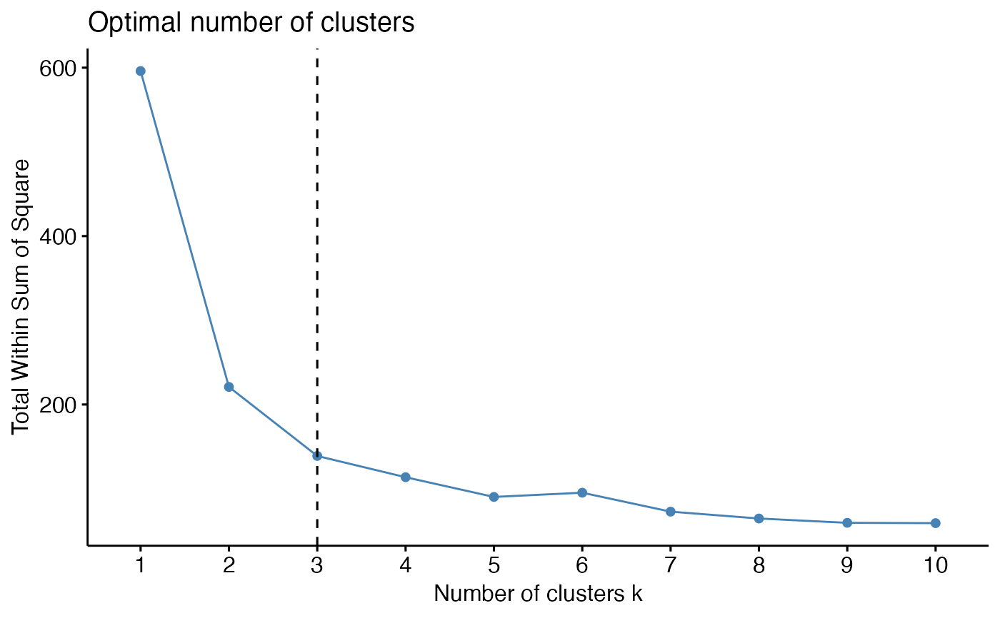
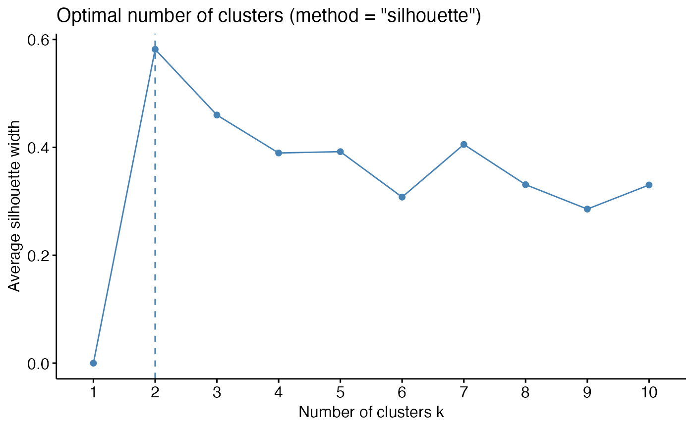
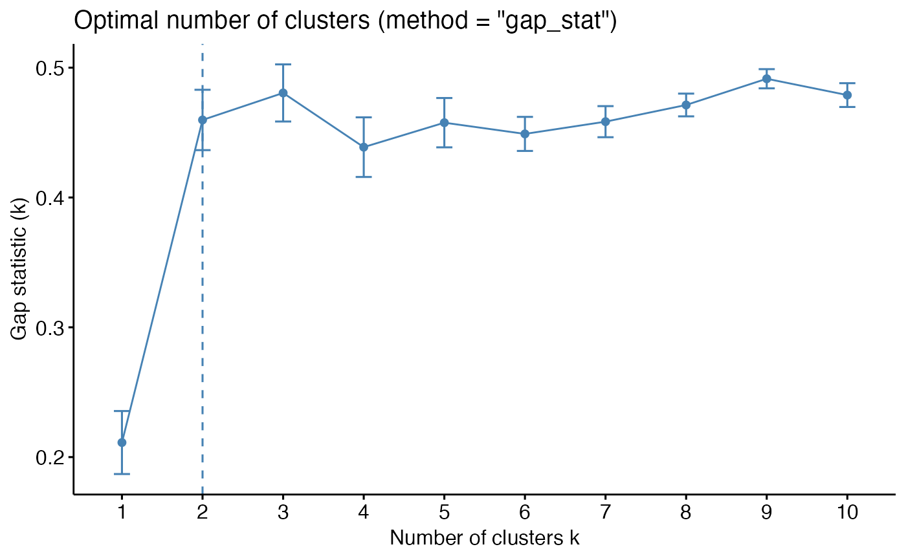
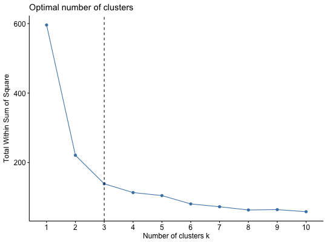

R/fviz_nbclust.R
fviz_nbclust.RdPartitioning methods, such as k-means clustering require the users to specify the number of clusters to be generated.
fviz_nbclust(): Determines and visualizes the optimal number of clusters using different methods: within cluster sums of squares, average silhouette and gap statistics.
fviz_gap_stat(): Visualizes the gap statistic generated by the
function clusGap() [in cluster package]. The optimal
number of clusters is specified using the "firstmax" method
(?cluster::clustGap).
Read more: Determining the optimal number of clusters
fviz_nbclust(
x,
FUNcluster = NULL,
method = c("silhouette", "wss", "gap_stat"),
diss = NULL,
k.max = 10,
nboot = 100,
verbose = interactive(),
barfill = "steelblue",
barcolor = "steelblue",
linecolor = "steelblue",
print.summary = TRUE,
...
)
fviz_gap_stat(
gap_stat,
linecolor = "steelblue",
maxSE = list(method = "firstSEmax", SE.factor = 1)
)numeric matrix or data frame. In the function fviz_nbclust(), x can be the results of the function NbClust().
a partitioning function which accepts as first argument a
(data) matrix like x, second argument, say k, k >= 2, the number of
clusters desired, and returns a list with a component named cluster which
contains the grouping of observations. Allowed values include: kmeans,
cluster::pam, cluster::clara, cluster::fanny, hcut, etc. This argument is
not required when x is an output of the function
NbClust::NbClust().
the method to be used for estimating the optimal number of clusters. Possible values are "silhouette" (for average silhouette width), "wss" (for total within sum of square) and "gap_stat" (for gap statistics).
dist object as produced by dist(), i.e.: diss = dist(x, method = "euclidean"). Used to compute the average silhouette width of clusters, the within sum of square and hierarchical clustering. If NULL, dist(x) is computed with the default method = "euclidean"
the maximum number of clusters to consider, must be at least two.
integer, number of Monte Carlo ("bootstrap") samples. Used only for determining the number of clusters using gap statistic.
logical value. If TRUE, the result of progress is printed.
fill color and outline color for bars
color for lines
logical value. If true, the optimal number of clusters are printed in fviz_nbclust().
optionally further arguments:
arguments for FUNcluster() in "wss"/"silhouette" modes; arguments for
clusGap() in "gap_stat" mode. A maxSE list
can also be supplied in "gap_stat" mode and is forwarded to
fviz_gap_stat().
an object of class "clusGap" returned by the function clusGap() [in cluster package]
a list containing the parameters (method and SE.factor) for determining the location of the maximum of the gap statistic (Read the documentation ?cluster::maxSE). Allowed values for maxSE$method include:
"globalmax": simply corresponds to the global maximum, i.e., is which.max(gap)
"firstmax": gives the location of the first local maximum
"Tibs2001SEmax": uses the criterion, Tibshirani et al (2001) proposed: "the smallest k such that gap(k) >= gap(k+1) - s(k+1)". It's also possible to use "the smallest k such that gap(k) >= gap(k+1) - SE.factor*s(k+1)" where SE.factor is a numeric value which can be 1 (default), 2, 3, etc.
"firstSEmax": location of the first f() value which is not larger than the first local maximum minus SE.factor * SE.f, i.e, within an "f S.E." range of that maximum.
see ?cluster::maxSE for more options
fviz_nbclust, fviz_gap_stat: return a ggplot2
The default method "firstSEmax" (developed by Martin Maechler, 2012) is recommended as a robust alternative to "Tibs2001SEmax". The original Tibshirani method can be overly conservative and often returns k=1 when standard deviations are large relative to gap differences. The "firstSEmax" method finds the smallest k within one standard error of the first local maximum, providing more stable results in practice.
set.seed(123)
# Data preparation
# +++++++++++++++
data("iris")
head(iris)
#> Sepal.Length Sepal.Width Petal.Length Petal.Width Species
#> 1 5.1 3.5 1.4 0.2 setosa
#> 2 4.9 3.0 1.4 0.2 setosa
#> 3 4.7 3.2 1.3 0.2 setosa
#> 4 4.6 3.1 1.5 0.2 setosa
#> 5 5.0 3.6 1.4 0.2 setosa
#> 6 5.4 3.9 1.7 0.4 setosa
# Remove species column (5) and scale the data
iris.scaled <- scale(iris[, -5])
# Optimal number of clusters in the data
# ++++++++++++++++++++++++++++++++++++++
# Examples are provided only for kmeans, but
# you can also use cluster::pam (for pam) or
# hcut (for hierarchical clustering)
### Elbow method (look at the knee)
# Elbow method for kmeans
fviz_nbclust(iris.scaled, kmeans, method = "wss") +
geom_vline(xintercept = 3, linetype = 2)

# Average silhouette for kmeans
fviz_nbclust(iris.scaled, kmeans, method = "silhouette")

### Gap statistic
library(cluster)
#> Warning: package ‘cluster’ was built under R version 4.5.2
set.seed(123)
# Compute gap statistic for kmeans
# we used B = 10 for demo. Recommended value is ~500
gap_stat <- clusGap(iris.scaled, FUN = kmeans, nstart = 25,
K.max = 10, B = 10)
print(gap_stat, method = "firstmax")
#> Clustering Gap statistic ["clusGap"] from call:
#> clusGap(x = iris.scaled, FUNcluster = kmeans, K.max = 10, B = 10, nstart = 25)
#> B=10 simulated reference sets, k = 1..10; spaceH0="scaledPCA"
#> --> Number of clusters (method 'firstmax'): 3
#> logW E.logW gap SE.sim
#> [1,] 4.534565 4.745781 0.2112157 0.024271468
#> [2,] 4.021316 4.481045 0.4597287 0.023247363
#> [3,] 3.806577 4.287108 0.4805310 0.022005009
#> [4,] 3.699263 4.138042 0.4387785 0.022976513
#> [5,] 3.589284 4.046911 0.4576270 0.018998839
#> [6,] 3.522810 3.971789 0.4489795 0.013118375
#> [7,] 3.448288 3.906691 0.4584031 0.011975368
#> [8,] 3.379870 3.851128 0.4712584 0.008759733
#> [9,] 3.310088 3.801559 0.4914709 0.007393207
#> [10,] 3.278659 3.757545 0.4788863 0.009164325
fviz_gap_stat(gap_stat)

# Gap statistic for hierarchical clustering
gap_stat <- clusGap(iris.scaled, FUN = hcut, K.max = 10, B = 10)
fviz_gap_stat(gap_stat)
